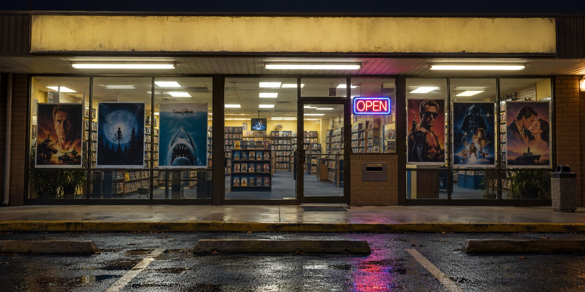
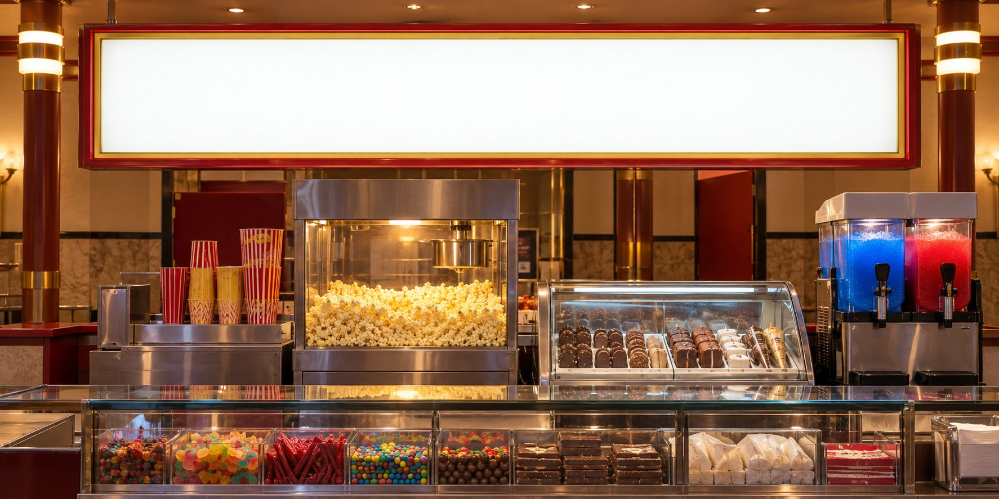

Now showingSpin the wheel

Spinner VideoOpen 7 days till late
Spinner VideoEvery film on the wheel, face-out on the shelves. Tap a tape to read the back.
Tap a sign to walk to that aisle

Candy Bar
What are you hungry for?
Tap a treat and we'll find the films that serve it
My movie checklist
Tick films you've watched. You can untick them any time. Saved in this browser only.
Your ticket stubs
Nothing yet. Your picks land here.